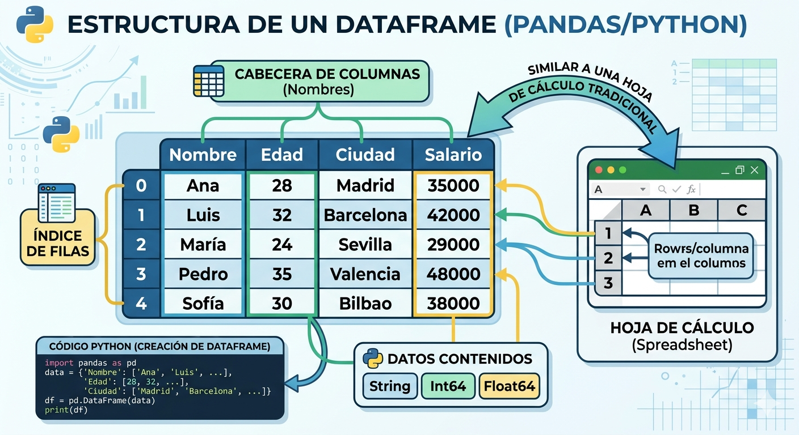
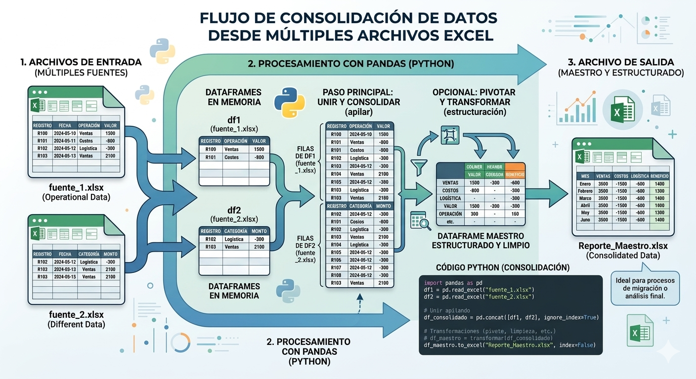
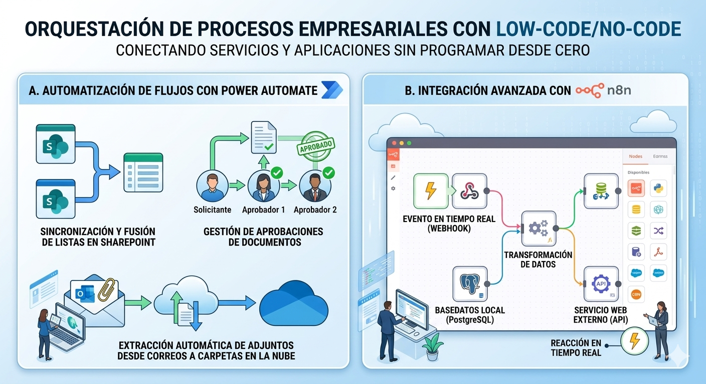
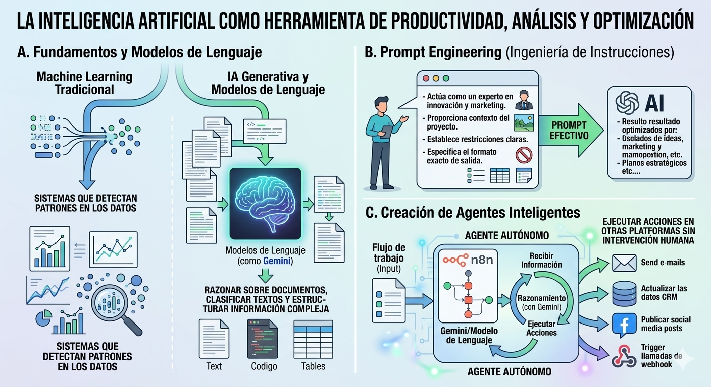

Unidad 3: Herramientas Computacionales para la Automatización#
Esta unidad transiciona de la lógica computacional pura a la aplicación práctica, dotando al estudiante de herramientas tecnológicas modernas para resolver problemas administrativos, automatizar tareas repetitivas y aprovechar el poder de los datos y la inteligencia artificial.
3.1 Programación básica aplicada a la solución de problemas#
En el entorno laboral actual, uno de los retos más comunes es la manipulación volúmenes de datos distribuidos en múltiples archivos. Para resolver esto, utilizaremos pandas, la librería estándar para el análisis y transformación de datos en Python.
A. Pandas y DataFrames#
La estructura de datos principal de esta librería es el DataFrame, que funciona exactamente como una tabla bidimensional (con filas y columnas), similar a una hoja de cálculo tradicional.

B. Lectura y Manipulación de Archivos#
Pandas permite leer, filtrar y limpiar archivos CSV o Excel con muy pocas líneas de código, evitando horas de trabajo manual.
import pandas as pd
# Leer un archivo de Excel
df_ventas = pd.read_excel("ventas_mensuales.xlsx")
# Filtrar: Mostrar solo ventas mayores a 1000
ventas_altas = df_ventas[df_ventas['Total'] > 1000]
# Limpieza: Eliminar filas con celdas vacías
df_limpio = df_ventas.dropna()
C. Caso Práctico: Consolidación de Múltiples Archivos#
Si la información operativa está dividida en varios archivos de Excel separados, podemos unirlos, pivotarlos y transformarlos en un solo archivo maestro estructurado, ideal para procesos de migración o análisis.
import pandas as pd
# 1. Cargar múltiples archivos de Excel
df1 = pd.read_excel("fuente_1.xlsx")
df2 = pd.read_excel("fuente_2.xlsx")
# 2. Consolidar en un solo DataFrame apilando los datos
df_consolidado = pd.concat([df1, df2], ignore_index=True)
# 3. Exportar el resultado a un nuevo archivo
df_consolidado.to_excel("Reporte_Maestro.xlsx", index=False)
print("Consolidación finalizada.")

3.2 Uso de software y herramientas de automatización#
No siempre es necesario programar desde cero. Las plataformas «Low-Code/No-Code» permiten orquestar procesos complejos conectando diferentes servicios y aplicaciones empresariales.
A. Automatización de flujos con Power Automate#
Power Automate es fundamental para gestionar flujos de trabajo corporativos. Permite crear secuencias automatizadas, como la sincronización y fusión de listas en SharePoint, la gestión de aprobaciones de documentos, o la extracción automática de archivos adjuntos desde correos electrónicos hacia carpetas en la nube.
B. Integración Avanzada con n8n#
Para procesos más técnicos que requieren orquestar aplicaciones mediante APIs, n8n ofrece un entorno visual avanzado basado en nodos. Permite automatizar la transferencia de datos entre una base de datos local (como PostgreSQL) y un servicio web externo, reaccionando a eventos en tiempo real.

3.3 Introducción a la inteligencia artificial y aprendizaje automático#
La inteligencia artificial (IA) dejó de ser un concepto teórico para convertirse en una herramienta diaria de productividad, análisis y optimización.
A. Fundamentos y Modelos de Lenguaje#
Es vital comprender la diferencia entre el Machine Learning tradicional (sistemas que detectan patrones en los datos) y la IA generativa. En la actualidad, interactuamos con Modelos de Lenguaje (como Gemini), capaces de razonar sobre documentos, clasificar textos y estructurar información compleja.
B. Prompt Engineering (Ingeniería de Instrucciones)#
El éxito al usar estas herramientas radica en el diseño de las instrucciones. Un buen «prompt» debe proporcionar contexto, definir un rol (por ejemplo, «Actúa como un experto en innovación y marketing»), establecer restricciones claras y especificar el formato exacto de salida.
C. Creación de Agentes Inteligentes#
El verdadero potencial de la automatización se alcanza al integrar estas tecnologías. Al combinar plataformas de orquestación como n8n con modelos como Gemini, podemos crear agentes autónomos. Estos agentes pueden recibir información de un flujo de trabajo, tomar decisiones lógicas basadas en lenguaje natural y ejecutar acciones en otras plataformas sin intervención humana.
